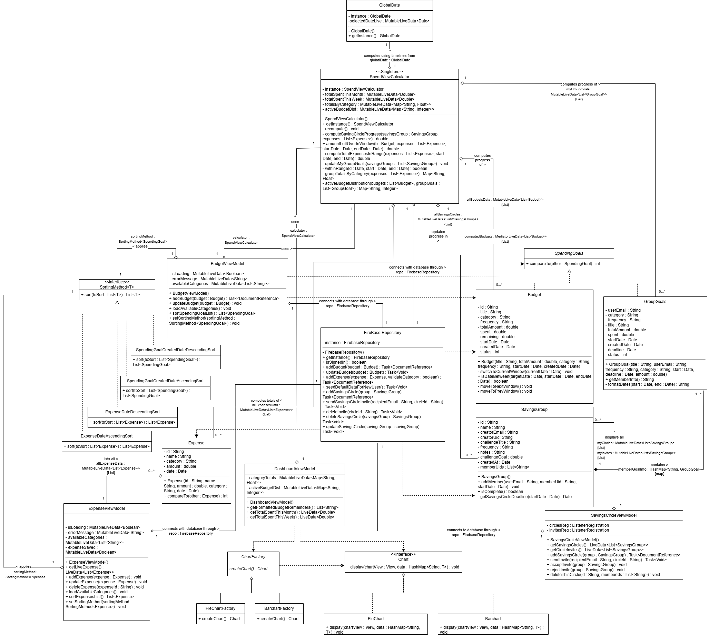

This project is called "Spendwise". It is an android app meant to help
with expense tracking and budgeting for users. Users can create monthly or
weekly budgets that automatically roll over for their given period, add expenses
that are directly linked to those budget categories, and recieve visual insights on their
spending habits and how well they're sticking to their budgets via charts displayed on their
dashboard. Users recieve notifications when they're close to their budget limits and SpendWise
tracks when a user has been inactive in logging expenses and prompts them to make sure they're
staying on top of their goals. Beyond just personal savings tracking, SpendWise is a collaborative tool that
allows users to connect with their friends on the app to set savings goals together.
SpendWise also has an integrated AI financial assistant chatbot that allows users
to recieve personalized savings advice, thorough expense reports, and detailed guidance
on how to manage budgets that they've almost used up to get by before they reach the end of
that period.
Design & Architecture

Above is a DCD diagram of a portion of our project. The architecture that we follow is
MVVM. We have separate models, view models, and views (not displayed in the DCD above). Views deal with
everything that is ui related. Models represented
how we handled the backend/business logic of our class.
The view models served as a connection between both by exposing live data to the view. As shown in our
diagram, we had several models such as for example, budget, expense, firebase-repository
class which handled backend data and objects. The activities managed the user interaction for each active screen
(e.g. chatbot activity, dashboard activity, etc) as well as all input forms and popups.
Our viewmodels, such as chatbotviewmodel and dashboardviewmodel, helped with
getting the data to display on the view pages (e.g. fetching the updated data for the visualization
charts on our homepage).
We implemented several design patterns, though not all of them are represented in the DCD above.
In particular we showcased the singleton pattern, strategy pattern, factory pattern, observer pattern,
and the decorator pattern. Our singleton FirebaseRepository manages our database repository in order to store
a user's information and update it during their app session. Our strategy pattern was used to allow users to sort the
list of displayed budgets and expenses on their respective tabs by ascending and descending date while ensuring that
adding new sorting methods does not violate the open-closed principle, simply requiring the developer to implement our SortingMethod
interface and add the new method as an enum option to be displayed in the dropdown for sorting methods. Our factory pattern is used
for the creation of the charts on the user's dashboard. Both PieChart and BarChart are created with the ChartFactory which means the creator
is not explicitly aware of what specifically it's creating.
Our observer handles notifying the viewmodels when our SpendViewCalculator completes recomputing budget calculations.
This allows all of our pages to update their data in real time as new budgets, expenses, and savings groups are made.
We used the decorator pattern to add features to dialog objects without changing their structure.
This then helps us customize our popups, adding navigation buttons, borders, and alert sounds.
User Interface (UI)
UI consistency was a major focus of our team. We wanted to make sure that our app looked cohesive and put-together. We implemented
consistent fonts and made sure to have all UI elements reference colors from our colors.xml file so that when we made theme changes
they applied app-wide. For our popups and spinners (dropdown elements) we created a custom theme so that they would match the fonts,
colors, and overall look of the rest of the app. Additionally, we tried to stick to color language that was consistent with the
purpose of our app. We wanted our UI to be as intuitive to work with as possible so that there was no learning curve for new users. All
icons (especially those displayed without text underneath them were chosen intentionally to clearly represent their function (e.g. the
clickable calendar on dashboard).
Functionality
Conclusions and Reflections/Learning
Over the course of a semester, we have learned a lot about not only app development, software design practices, and other technical skills, but
have also developed valuable interpersonal and time management skills necessary to be effective and efficient programmers in industry and for
our own projects. Every step of the process, between our pre-sprint meetings, task assignment, progress, encountering one of our many bugs and
other issues and collaboratively working to fix them, testing, deploying and creating deliverables, was another step for each of us to develop
critical real-world skills. Everything from dealing with sudden showstopper bugs that required a collaborative hotfix to working through complex
system design and implementation as a group to implement an end-to-end solution for elaborate products such as a chatbot, taught us useful
technical skills from design to implementation to testing, as well as important soft skills that we will be using for long after we have completed
this class.
Contributors
This website was created by Yufei (Fiona) Li, Sagarika Menon, and Aryav Taneja.